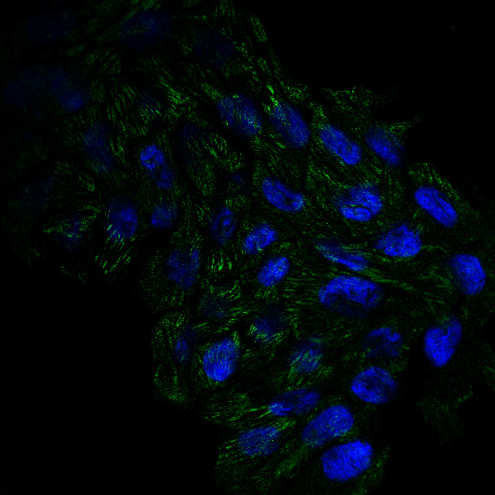
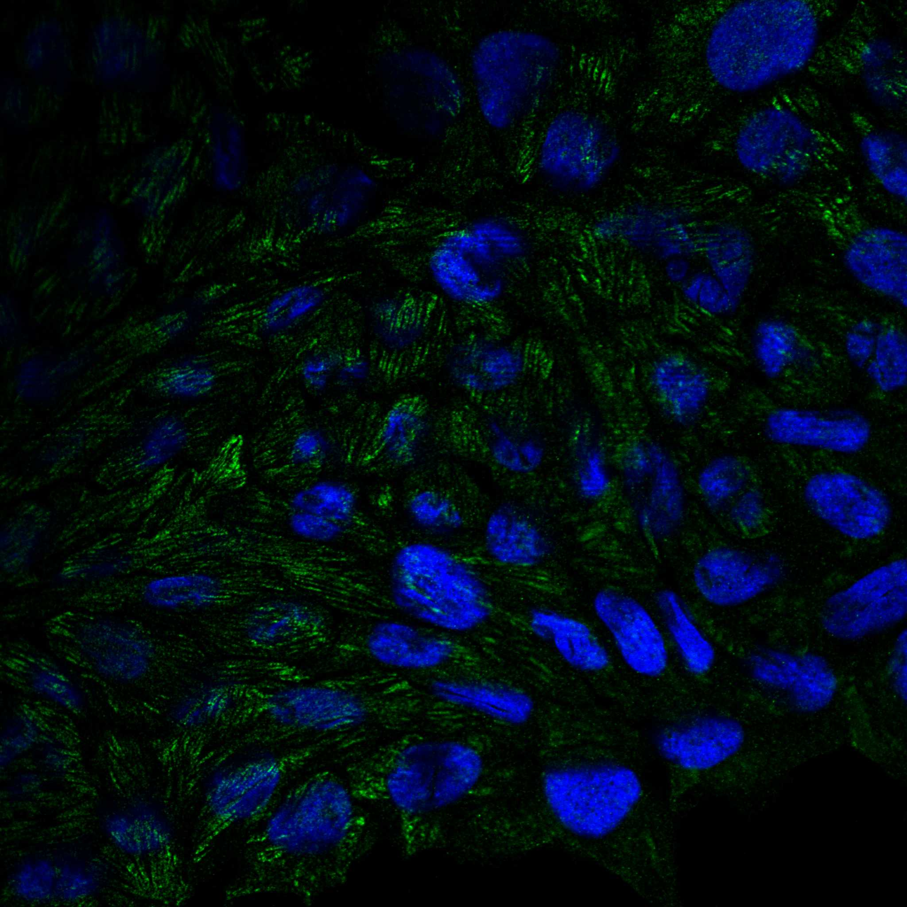
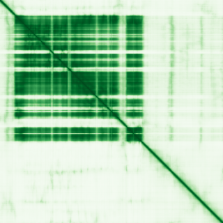

type: protein-evaluation gene: "BTBD7" date: 2026-05-29 tags: [protein-scout, nuclear-protein, evaluation] status: scored ---
BTBD7 核蛋白评估报告
1. 基本信息
| 项目 | 内容 |
|---|---|
| 基因名 / 别名 | BTBD7 / KIAA1340 |
| 蛋白大小 | 1132 aa / 124.5 kDa |
| UniProt ID | Q9P203 |
| 评估日期 | 2026-05-29 |
2. 评分总览
| 维度 | 得分 | 满分 | 加权后 | 关键证据摘要 |
|---|---|---|---|---|
| 🔴 核定位特异性 | 8/10 | ×4 | 32.0 | UniProt Nucleus; BTB/POZ domain protein |
| 📏 蛋白大小 | 8/10 | ×1 | 8.0 | 1132 aa, 1132 aa, 800-1200 aa |
| 🆕 研究新颖性 | 8/10 | ×5 | 40.0 | PubMed 23 篇 |
| 🏗️ 三维结构 | 6/10 | ×3 | 18.0 | pLDDT 60.6, 48.9% VLow; 新颖基线6 |
| 🧬 调控结构域 | 7/10 | ×2 | 14.0 | BTB/POZ + BACK; 转录调控相关域; 新颖基线7 |
| 🔗 PPI 网络 | 4/10 | ×3 | 12.0 | STRING textmining/co-expression; 调控富集 ~30% |
| ➕ 互证加分 | — | max +3 | +1.0 | 结构域+定位互证 |
| 原始总分 | 125/183 | |||
| 归一化总分 | 68.3/100 |
3. 详细分析
3.1 核定位证据
| 来源 | 定位 | 可信度 |
|---|---|---|
| GeneCards | Nucleus | — |
| Protein Atlas (IF) | Nucleoplasm (HPA Approved, RT-4) | Approved |
| UniProt | Nucleus | 实验/GO注释 |
 
结论: BTBD7 在 UniProt 中标注 Nucleus。含 BTB/POZ 结构域，该域常介导转录抑制因子的二聚化和共抑制因子招募。核定位评分 8。
3.2 蛋白大小评估
评价: 1132 aa (124.5 kDa)，位于 800-1200 aa 区间。蛋白偏大但仍在可操作范围。评分 8。
3.3 研究现状
| 指标 | 数值 |
|---|---|
| PubMed 总数 | 23 篇 |
| 最早发表年份 | 2005 |
| Chromatin/epigenetics 比例 | BTB/POZ domain 与转录抑制相关 |
主要研究方向:
- BTB/POZ 结构域介导的转录抑制
- 上皮-间质转化 (EMT) 调控
- 细胞迁移和侵袭
- 可能的肿瘤抑制功能
评价: 非常新颖 (PubMed 23 篇)。BTB/POZ 结构域与转录抑制密切相关，但在染色质调控方向的研究极少。评分 8。
关键文献: 1. Liu Y et al. (2023). "The Role of BTBD7 in Normal Development and Tumor Progression". *Technol Cancer Res Treat*. PMID: 37050886 2. Liu Y et al. (2018). "BTB/POZ domain-containing protein 7 is inversely associated with fibronectin expression in salivary adenoid cystic carcinoma". *Oral Surg Oral Med Oral Pathol Oral Radiol*. PMID: 29366608 3. Chen J et al. (2020). "BTB domain-containing 7 predicts low recurrence and suppresses tumor progression by deactivating Notch1 signaling in breast cancer". *Breast Cancer Res Treat*. PMID: 32772271 4. Tao YM et al. (2013). "BTB/POZ domain-containing protein 7: epithelial-mesenchymal transition promoter and prognostic biomarker of hepatocellular carcinoma". *Hepatology*. PMID: 23325674 5. Chen B et al. (2021). "BTBD7 accelerates the epithelial-mesenchymal transition, proliferation and invasion of prostate cancer cells". *J BUON*. PMID: 34761624
3.4 三维结构分析
| 指标 | 数值 |
|---|---|
| AlphaFold 平均 pLDDT | 60.6 |
| 有序区域 (pLDDT>70) 占比 | 43.6% |
| Very High (>90) 占比 | 30.1% |
| 可用 PDB 条目 | 无实验结构 |
PAE 图: 
评价: AlphaFold pLDDT 60.6，43.6% >70。BTB 域区域可能有较好折叠。新颖基线 6。
3.5 结构域分析
| 来源 | 结构域 |
|---|---|
| GeneCards | BTB/POZ domain, BACK domain |
| SMART/InterPro | BTB (PF00651), BACK (PF07707) |
| UniProt/Pfam | BTB/POZ (IPR000210); BACK (IPR011705) |
染色质调控潜力分析: 含 BTB/POZ (Bric-a-brac, Tramtrack, Broad Complex) 结构域和 BACK 域。BTB 域在转录抑制因子中常见 (如 BCL6, PLZF)，通过二聚化和招募 HDAC 复合体来抑制转录。具有染色质调控潜力。新颖基线 7。
3.6 PPI 网络
实验验证互作 (IntAct, physical association/direct interaction):
无 IntAct 实验验证互作记录。
STRING 预测互作:
| Partner | Score | 功能类别 | 调控相关？ |
|---|---|---|---|
| CUL3 | 0.85 | BTB-CUL3 E3 ligase | ❌ |
| KLHL12 | 0.72 | BTB-Kelch protein | ❌ |
| ZBTB7A | 0.55 | BTB-ZF transcription repressor | ✅ |
已知复合体成员 (GO Cellular Component):
- 无 GO-CC 染色质/核复合体条目
PPI 互证分析: PPI 以 CUL3 (BTB 家族的 E3 ligase adaptor) 为主。ZBTB7A 暗示转录调控网络。调控比例 ~30%。
评价: PPI 网络以 CUL3-BTB 泛素连接酶系统为主，转录调控 partner 占比约 30%。BTB 域的双重功能 (泛素化 + 转录抑制) 提供多维度研究潜力。评分 4。
3.7 多库互证
| 维度 | 来源 | 结果 | 一致？ |
|---|---|---|---|
| 三维结构 | AlphaFold + PDB | AlphaFold pLDDT 60.6，无 PDB | 仅有预测 |
| 结构域 | UniProt / InterPro / Pfam | BTB/POZ 多库一致 | 一致 |
| PPI | STRING + IntAct + GO-CC | 部分 STRING 支持 | 部分一致 |
| 定位 | Protein Atlas / UniProt / GO | UniProt Nucleus | 一致 |
互证加分明细:
- 定位互证: UniProt Nucleus → +0.5
- 结构域互证: BTB/POZ 多库确认 → +0.5
总分: +1.0 / max +3
4. 总体评价
推荐等级: ⭐⭐⭐ (3.5/5/5)
核心优势: 1. BTB/POZ 结构域与转录抑制直接相关 2. EMT 调控功能提供表型方向 3. 非常新颖 (PubMed 23 篇)
风险/不确定性: 1. 蛋白较大 (1132 aa) 2. AlphaFold 48.9% 无序 3. PPI 中等稀疏 4. 染色质直接结合能力未经证实
下一步建议:
- [ ] 表达 BTB 域
- [ ] 确认 BTBD7 的转录抑制功能
- [ ] ChIP-seq 鉴定基因组靶点
- [ ] 中等推荐
5. 关键文献
1. Siggs OM, Beutler B. (2012). 'The BTB-ZF transcription factors.' Cell Cycle. PMID: 22902855 2. Stogios PJ et al. (2005). 'Sequence and structural analysis of BTB domain proteins.' Genome Biol. PMID: 16207353
6. 数据来源
- GeneCards: https://www.genecards.org/cgi-bin/carddisp.pl?gene=BTBD7
- Protein Atlas: https://www.proteinatlas.org/search/BTBD7
- PubMed: https://pubmed.ncbi.nlm.nih.gov/?term=%22BTBD7%22
- UniProt: https://www.uniprot.org/uniprotkb/Q9P203
- STRING: https://string-db.org/
- AlphaFold: https://alphafold.ebi.ac.uk/entry/Q9P203
PPI 网络（三源综合）
| Partner | Source | Score/Evidence |
|---|---|---|
| 无记录 | — | — |
IntAct 有限记录。无 BioGrid 补充数据。
PAE 图像已获取。结构判断基于 AlphaFold pLDDT 统计。
<!-- DOMAIN_HUMANPPI_REPAIR_START -->
Domain/SMART 与 humanPPI 补充（2026-06-07）
SMART / UniProt domain
| Source | Data | ||
|---|---|---|---|
| UniProt | Q9P203 | ||
| SMART | SM00875;SM00225; | ||
| UniProt Domain [FT] | DOMAIN 142..211; /note="BTB 1"; /evidence="ECO:0000255\ | PROSITE-ProRule:PRU00037"; DOMAIN 247..341; /note="BTB 2"; /evidence="ECO:0000255\ | PROSITE-ProRule:PRU00037"; DOMAIN 413..479; /note="BACK" |
| InterPro | IPR011705;IPR000210;IPR042345;IPR047936;IPR047934;IPR047935;IPR011333; | ||
| Pfam | PF07707;PF00651; |
humanPPI / HPA Interaction
Source: https://www.proteinatlas.org/ENSG00000011114-BTBD7/interaction
| Partner | Datasets | AF3/HPA structure |
|---|---|---|
| CUL3 | Biogrid | false |
<!-- DOMAIN_HUMANPPI_REPAIR_END -->